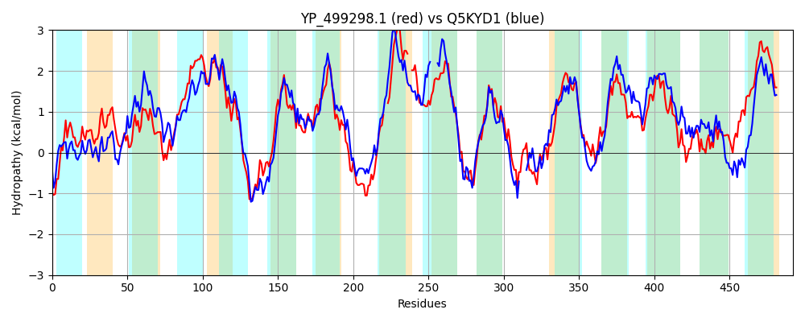

Hit Accession: Q5KYD1
Hit TCID: 2.A.17.1.7
Hit Description: gnl|BL_ORD_ID|14405 gnl|TC-DB|Q5KYD1|2.A.17.1.7 Di-tripeptide ABC transporter (Permease) OS=Geobacillus kaustophilus (strain HTA426) GN=GK2020 PE=3 SV=1
Mach Len: 492
e:0.000000
Query TMS Count : 13
Hit TMS Count: 14
TMS-Overlap Score: 10.050000
Predicted Substrates:CHEBI:7990;peptide
BLAST Alignment:
Score: 1262 , Bit scores: 490 bits, E-value: 7.5e-171, Alignment length: 492, Percentage identity: 51
Query: 14 IPQTGFFGHPRGLGVLFFVEFWERFSYYGMRALLIFYMYFAVTDNGLGIDKTTAMSIMSVYGSLIYMTSIPGGWIADRITGTRGATLLGAVFIIIGHICLSLPFALIGLFTSMFFIIIGSGLMKPNISNIVGRLYPENDRRMDAGFVIFYMSVNMGALLSPIILQHFVNVKNFHGGFLIAAVGMALGLVWYVLFNRKNLGSVGMKPTNPLTPAEKKKYGLI--IGSVVLAIVLIIVI--GALTNSLSFNLVSNTVLVLGIALPIIYFTLIIRSKDVTDTERSRVKAFIPLFILGMVFWAIQEQGSNVLNIYGIEHSDMKLNLFGWKTNFGEAIFQSINPLFILLLAPIISLLWQKLGTKQPSLPVKFAIGTFLAGASYILIGIVGYASGSSNFSVNWVILSYIICVIGELCLSPTGNSAAVKLAPKAFNAQMMSIWYLTNASAQAINGTLVKLIEPLGQTNYFIFLGVVAIIVTTIVLAFSPLIIKAMKGIR 501
+PQ GFFGHP+GL LFF EFWERFSYYGMRA+L++YMY+ V+ GLG+D+ A++IMS+YG+L+YM+ I GGW+ADR+ GT A G + I+ GHI L++P + LF SM I++G+GL+KPN+S+IVG +Y D R DAGF IFYM +N+GA L+P+++ NFH GF +AAVGM LGLV +V +KNLG G NPLTPAEKKK I +G+VV+A++L I+I G T +LV +LGI +PIIYF ++ RS T ERSRV A+IPLF+ +FWAIQEQGS +L Y +D + L + A FQS+NPLFI++LAP+ + +W KLG +QP++P KFA+G AG S+I+I + G+ SG W++LSY I V+GELCLSP G SA KLAP AF+AQ MS+W+L+NA+AQAIN LV+ P +T YF +G A+++ I+LA +P I + MKGIR
Sbjct: 13 VPQRGFFGHPKGLFTLFFTEFWERFSYYGMRAILVYYMYYEVSKGGLGLDEHLALAIMSIYGALVYMSGIIGGWLADRVFGTSRAVFYGGLLIMAGHIALAIPGGVAALFVSMALIVLGTGLLKPNVSSIVGDMYKPGDDRRDAGFSIFYMGINLGAFLAPLVVGTAGMKYNFHLGFGLAAVGMFLGLVVFVATRKKNLGLAGTYVPNPLTPAEKKKAAAIMAVGAVVIAVLLAILIPNGWFTVETFISLVG----ILGIIIPIIYFVVMYRSPKTTAEERSRVIAYIPLFVASAMFWAIQEQGSTILANY----ADKRTQLDVAGIHLSPAWFQSLNPLFIIILAPVFAWMWVKLGKRQPTIPQKFALGLLFAGLSFIVILVPGHLSGGGLVHPIWLVLSYFIVVLGELCLSPVGLSATTKLAPAAFSAQTMSLWFLSNAAAQAINAQLVRFYTPENETAYFGTIGGAALVLGLILLAIAPRIGRLMKGIR 496 | Protein Hydropathy Plots: |
|---|
| |
Pairwise Alignment-Hydropathy Plot:
|
|---|
|  |